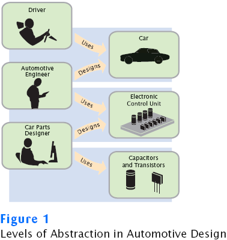
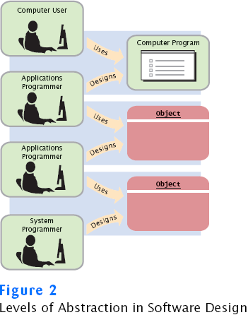
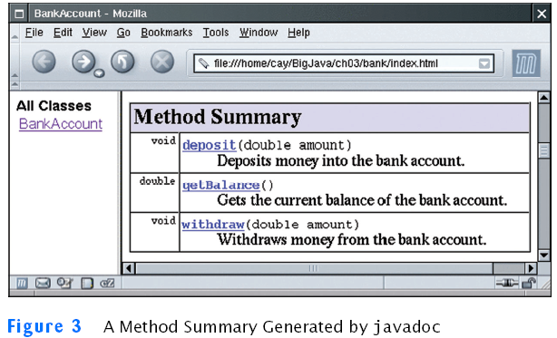
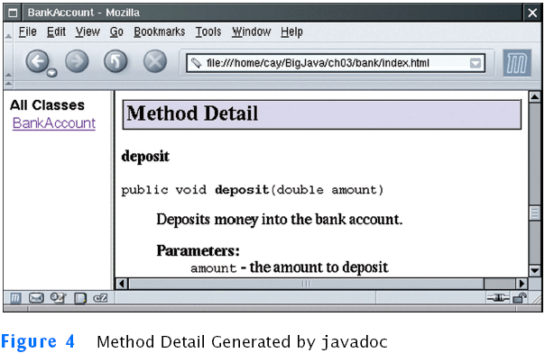
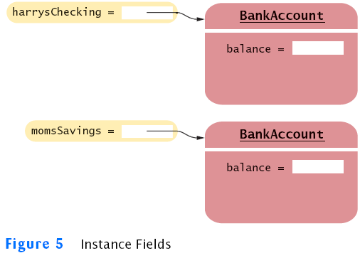
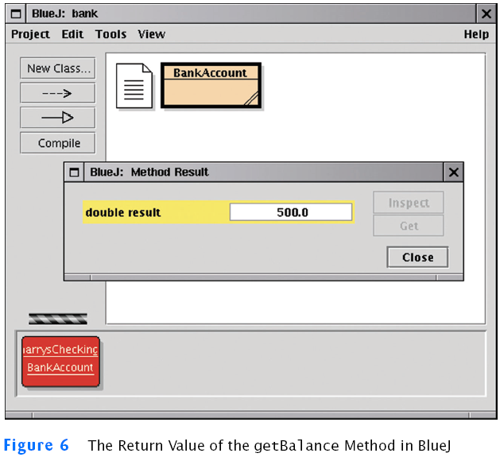
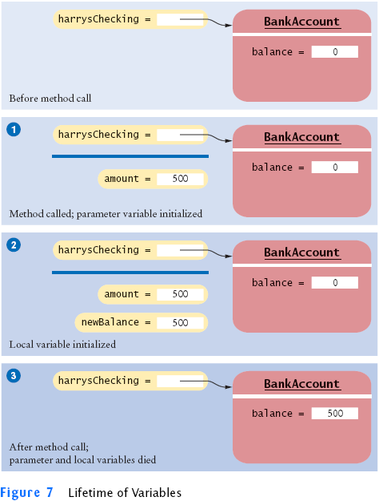
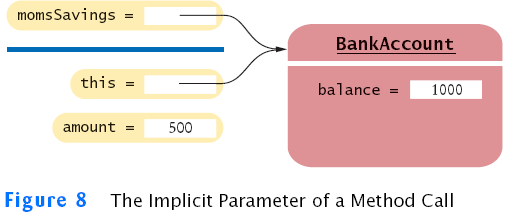

Chapter 3
Implementing Classes
Chapter Goals
- To become familiar with the process of implementing classes
- To be able to implement simple methods
- To understand the purpose and use of constructors
- To understand how to access instance fields and local variables
- To appreciate the importance of documentation comments
Black Boxes
- A black box magically does its thing
- Hides its inner workings
- Encapsulation: the hiding of unimportant details
- What is the right concept for each particular black box?
- Concepts are discovered through abstraction
- Abstraction: taking away inessential features, until only the
essence of the concept remains
- In object-oriented programming the black boxes from which
a program is manufactured are called objects
Levels of abstraction: A Real Life Example
- Black boxes in a car: transmission, electronic control module,
etc.

Levels of abstraction: A Real Life Example
- Users of a car do not need to understand how black boxes work
- Interaction of a black box with outside world is well-defined
- Drivers interact with car using pedals, buttons, etc.
- Mechanic can test that engine control module sends the right
firing signals to the spark plugs
- For engine control module manufacturers, transistors and
capacitors are black boxes magically produced by an electronics
component manufacturer
- Encapsulation leads to efficiency:
- Mechanic deals only with car components (e.g. electronic
control module), not with sensors and transistors
- Driver worries only about interaction with car (e.g. putting
gas in the tank), not about motor or electronic control module
Levels of abstraction: Software Design

Levels of abstraction: Software Design
- Old times: computer programs manipulated primitive types such as
numbers and characters
- Manipulating too many of these primitive quantities is too much
for programmers and leads to errors
- Solution: Encapsulate routine computations to software black boxes
- Abstraction used to invent higher-level data types
- In object-oriented programming, objects are black boxes
- Encapsulation: Programmer using an object knows about its
behavior, but not about its internal structure
- In software design, you can design good and bad abstractions with
equal facility; understanding what makes good design is an important
part of the education of a software engineer
- First, define behavior of a class; then, implement it
Self Check
- In Chapters 1 and 2, you used System.out as a black box
to cause output to appear on the screen. Who designed and implemented System.out?
- Suppose you are working in a company that produces personal
finance software. You are asked to design and implement a class for
representing bank accounts. Who will be the users of your class?
Answers
- The programmers who designed and implemented the Java library
- Other programmers who work on the personal finance application
Designing the Public Interface of a Class
Behavior of bank account (abstraction):
- deposit money
- withdraw money
- get balance
Designing the Public Interface of a Class: Methods
Methods of BankAccount class:
- deposit
- withdraw
- getBalance
We want to support method calls such as the following:
harrysChecking.deposit(2000);
harrysChecking.withdraw(500);
System.out.println(harrysChecking.getBalance());
Designing the Public Interface of a Class: Method Definition
- access specifier (such as public)
- return type (such as String or void)
- method name (such as deposit)
- list of parameters (double amount for deposit)
- method body in { }
Examples:
- public void deposit(double amount) { . . . }
- public void withdraw(double amount) { . . . }
- public double getBalance() { . . . }
Syntax 3.1: Method Definition
accessSpecifier returnType methodName(parameterType parameterName, . . .)
{
method body
}
|
|
Example:
| |
public void deposit(double amount)
{
. . .
}
|
Purpose:
To define the behavior of a method
|
Designing the Public Interface of a Class: Constructor Definition
Syntax 3.2 : Constructor Definition
| |
accessSpecifier ClassName(parameterType parameterName, . . .)
{
constructor body
}
|
Example:
| |
public BankAccount(double initialBalance)
{
. . .
}
|
Purpose:
To define the behavior of a constructor
|
BankAccount Public Interface
The public constructors and methods of a class form the public
interface of the class.
public class BankAccount
{
// Constructors
public BankAccount()
{
// body--filled in later
}
public BankAccount(double initialBalance)
{
// body--filled in later
}
// Methods
public void deposit(double amount)
{
// body--filled in later
}
public void withdraw(double amount)
{
// body--filled in later
}
public double getBalance()
{
// body--filled in later
}
// private fields--filled in later
}
Syntax 3.3 : Class Definition
| |
accessSpecifier class ClassName
{
constructors
methods
fields
}
|
Example:
| |
public class BankAccount
{
public BankAccount(double initialBalance) { . . . }
public void deposit(double amount) { . . . }
. . .
}
|
Purpose:
To define a class, its public interface, and its implementation details
|
Self Check
- How can you use the methods of the public interface to empty
the harrysChecking bank account?
- Suppose you want a more powerful bank account abstraction that
keeps track of an account number in addition to the balance.
How would you change the public interface to accommodate this
enhancement?
Answers
- harrysChecking.withdraw(harrysChecking.getBalance())
- Add an accountNumber parameter to the constructors, and
add a getAccountNumber method. There is no need for a setAccountNumber
method–the account number never changes after construction.
Commenting the Public Interface
/**
Withdraws money from the bank account.
@param the amount to withdraw
*/
public void withdraw(double amount)
{
// implementation filled in later
}
/**
Gets the current balance of the bank account.
@return the current balance
*/
public double getBalance()
{
// implementation filled in later
}
Class Comment
/**
A bank account has a balance that can
be changed by deposits and withdrawals.
*/
public class BankAccount
{
. . .
}
- Provide documentation comments for
- every class
- every method
- every parameter
- every return value.
Javadoc Method Summary

Javadoc Method Detail

Self Check
- Suppose we enhance the BankAccount class so
that each account has an account number. Supply a documentation comment
for the constructor BankAccount(int accountNumber, double
initialBalance)
- Why is the following documentation comment questionable?
/**
Each account has an account number.
@return the account number of this account.
*/
int getAccountNumber()
Answers
-
/**
Constructs a new bank account with a given initial balance.
@param accountNumber the account number for this account
@param initialBalance the initial balance for this account
*/
- The first sentence of the method description should describe the
method–it is
displayed in isolation in the summary table
Instance Fields
- An object stores its data in instance fields
- Field: a technical term for a storage location inside a block of
memory
- Instance of a class: an object of the class
- The class declaration specifies the instance fields:
public class BankAccount
{
. . .
private double balance;
}
Instance Fields
- An instance field declaration consists of the following parts:
- access specifier (such as private)
- type of variable (such as double)
- name of variable (such as balance)
- Each object of a class has its own set of instance fields
- You should declare all instance fields as private
Instance Fields

Syntax 3.4 : Instance Field Declaration
| |
accessSpecifier class ClassName
{
. . .
accessSpecifier fieldType fieldName;
. . .
}
|
Example:
| |
public class BankAccount
{
. . .
private double balance;
. . .
}
|
Purpose:
To define a field that is present in every object of a class
|
Accessing Instance Fields
- The deposit method of the BankAccount class
can access
the private instance field:
public void deposit(double amount)
{
double newBalance = balance + amount;
balance = newBalance;
}
- Other methods cannot:
public class BankRobber
{
public static void main(String[] args)
{
BankAccount momsSavings = new BankAccount(1000);
. . .
momsSavings.balance = -1000; // ERROR
}
}
- Encapsulation = Hiding data and providing access through methods
Self Check
- Suppose we modify the BankAccount class so
that each bank account has an account number. How does this change
affect the instance fields?
- What are the instance fields of the Rectangle class?
Answers
- An instance field
private int accountNumber;
needs to be added to the class
-
private int x;
private int y;
private int width;
private int height;
Implementing Constructors
Constructor Call Example
- BankAccount harrysChecking = new BankAccount(1000);
- Create a new object of type BankAccount
- Call the second constructor (since a construction parameter
is supplied)
- Set the parameter variable initialBalance to 1000
- Set the balance instance field of the newly created
object to initialBalance
- Return an object reference, that is, the memory location of
the object, as the value of the new expression
- Store that object reference in the harrysChecking
variable
Implementing Methods
Method Call Example
- harrysChecking.deposit(500);
- Set the parameter variable amount to 500
- Fetch the balance field of the object whose
location is stored in harrysChecking
- Add the value of amount to balance and store the
result in the variable newBalance
- Store the value of newBalance in the balance
instance field, overwriting the old value
Syntax 3.5: The return Statement
| |
return expression;
or
return; |
Example:
Purpose:
To specify the value that a method returns, and exit the method
immediately. The return value becomes the value of the method call
expression.
|
File BankAccount.java
Self Check
- How is the getWidth method of the Rectangle
class implemented?
- How is the translate method of the Rectangle
class implemented?
Answers
-
public int getWidth()
{
return width;
}
- There is more than one correct answer. One possible
implementation is as
follows:
public void translate(int dx, int dy)
{
int newx = x + dx;
x = newx;
int newy = y + dy;
y = newy;
}
Testing a Class
- Test class: a class with a main method that contains statements
to
test another class.
- Typically carries out the following steps:
- Construct one or more objects of the class that is being
tested
- Invoke one or more methods
- Print out one or more results
- Details for building the program vary. In most environments, you
need to carry out these steps:
- Make a new subfolder for your program
- Make two files, one for each class
- Compile both files
- Run the test program
File BankAccountTester.java
Output:
1500
Testing With BlueJ

Self Check
- When you run the BankAccountTester program,
how many objects of class BankAccount are constructed? How
many objects of type BankAccountTester?
- Why is the BankAccountTester class unnecessary in
development environments that allow interactive testing, such as BlueJ?
Answers
- One BankAccount object, no BankAccountTester
object. The purpose of the BankAccountTester class is merely
to hold the main method
- In those environments, you can issue interactive commands to
construct BankAccount objects, invoke methods, and display
their return values
Categories of Variables
- Categories of variables
- Instance fields (balance in BankAccount)
- Local variables (newBalance in deposit
method)
- Parameter variables (amount in deposit
method)
- An instance field belongs to an object
- The fields stay alive until no method uses the object any longer
- In Java, the garbage collector periodically reclaims
objects when they are no longer used
- Local and parameter variables belong to a method
- Instance fields are initialized to a default value, but you must
initialize local variables
Lifetime of Variables
harrysChecking.deposit(500);
double newBalance = balance + amount;
balance = newBalance;

Self Check
- What do local variables and parameter variables have
in common? In which essential aspect do they differ?
- During execution of the BankAccountTester program in
the preceding section, how many instance fields, local variables, and
parameter variables were created, and what were their names?
Answers
- Variables of both categories belong to methods–they
come alive when the method is called, and they die when the method
exits. They differ in their initialization. Parameter variables are
initialized with the call values; local variables must be explicitly
initialized.
- One instance field, named balance. Three local
variables, one named harrysChecking and two named newBalance
(in the deposit and withdraw methods); two
parameter variables, both named amount (in the deposit
and withdraw methods).
Implicit and Explicit Method Parameters
- The implicit parameter of a method is the object on which the
method is invoked
- The this reference denotes the implicit parameter
- Use of an instance field name in a method denotes the instance
field of the implicit parameter
public void withdraw(double amount)
{
double newBalance = balance - amount;
balance = newBalance;
}
- balance is the balance of the object to the left of the
dot:
momsSavings.withdraw(500)
means
double newBalance = momsSavings.balance - amount;
momsSavings.balance = newBalance;
Implicit Parameters and this
Implicit Parameters and this

Self Check
- How many implicit and explicit parameters does the withdraw
method of the BankAccount class have, and what are their
names and types?
- In the deposit method, what is the meaning of this.amount?
Or, if the expression has no meaning, why not?
- How many implicit and explicit parameters does the main
method of the BankAccountTester class have, and what are they
called?
Answers
- One implicit parameter, called this, of type BankAccount,
and one explicit parameter, called amount, of type double.
- It is not a legal expression. this is of type BankAccount
and the BankAccount class has no field named amount.
- No implicit parameter–the method is static–and one explicit
parameter, called args.